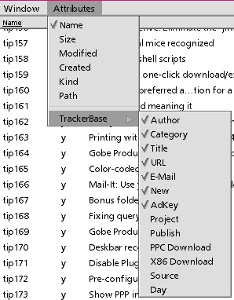
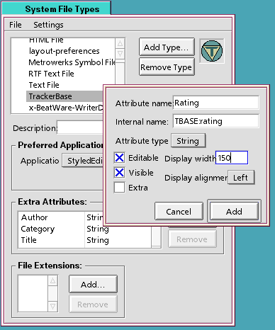

Sample Code
The BeOS query engine can be accessed in two ways: through the usual GUI interface, or via the query command . Terminal queries use the same syntax as the GUI's Find by Formula mode. The BeOS shell also has a mechanism for viewing, adding, and removing attributes to files without Tracker's help.
Because command-line queries and attribute manipulation tools all function like standard shell commands (meaning they can take standard input and yield standard output), powerful data mining is possible by integrating these tools into bash shell scripts (or any scripting language, for that matter).
TrackerBase installs a new filetype on your system with a text supertype and a trackerbase subtype. It's associated with StyledEdit by default, though you can of course change this. The text/trackerbase filetype includes a bunch of attributes used by the sample scripts. Natually, you can add new attributes to this type or delete attributes you won't need. Some of these attributes are indexed, meaning that BeOS keeps a log of files with these attributes for use by the query engine. TrackerBase ships with these attributes:
Author Category Title URL Email New AdKey Project Publish PPCDownload X86Download Source DayTo view or edit an attribute's contents from within Tracker, pull down the Attributes menu, scroll to the TrackerBase entry, and select or deselect attributes. Any attribute with a checkmark by its name is currently being displayed.

Any Tracker view containing one or more TrackerBase files will show these items as entries in the Attributes | TrackerBase menu.
Editing Attributes in Tracker
There are a few tricks to editing attributes in Tracker. In most cases, you'll want to spread out the Tracker view as wide and tall as possible (maybe dedicate a workspace to it) so you can see as many files as possible. Move your most commonly used columns toward the far left by dragging that column's header. To edit an attribute, click just once in an attribute's field -- double-clicking will launch the file. Changing attributes does not change the file's modification date.If you find that you cannot edit an attribute, this can only be because it's set to be uneditable in your FileTypes preferences. If it's not an attribute provided by this system or that you created yourself, it's probably set to be uneditable for a very good reason -- think twice before changing one of these.
Adding New Attributes
Need an attribute not supplied with TrackerBase? No problem. Open up Preferences | FileTypes and navigate to text/trackerbase. Click the Add button, and you'll see a dialog like the one pictured below.
Enter a friendly name in the top field, then an internal name, of the form TBASE:attribname. Try to keep the second part in lowercase. If you're working with text, choose the String type from the dropdown, then check Editable and Visible (assuming you want it to be both). The column width is Tracker's default display width, but you can always resize columns. After closing the dialog, you may have to close and re-open your Tracker view to make the attribute appear on the Attributes | TrackerBase sub-menu.
Indexing Attributes
In order to search on attribute criteria, attributes need to be logged in the filesystem's index. However, adding tons of indexes to your system is not recommended, as the cumulative effect can cause a performance hit.Note: If your scripts work by examing directory contents rather than by running queries, you don't need to index anything -- your scripts can extract attribute values whether they're indexed or not.
TrackerBase creates the following indexes upon installation:
TBASE:author TBASE:category TBASE:new TBASE:project TBASE:publish TBASE:titleIf you're sure you won't be needing some of these, you can delete them by typing rmindex TBASE:indexname into Terminal. You can see a list of your indices by typing lsindex.
To add a new index, use mkindex TBASE:indexname. However, there's a caveat here: if you already have 300 files with, say, a "ratings" attribute and you then create an index for that attribute, those 300 files won't suddenly become searchable on the ratings attribute. Only files created after the index is created are added to the index. There's an easy fix for this situation though: after making your index, copy (don't move) the whole folder to another location, then delete the originals. The act of copying them will write their attribs to the index.
Command-line Attribute Tools
Attributes are accessed from the command line with the following commands:
listattr filename
Returns a list of all attributes associated with that file.
catattr attributename filename
Returns the data stored in that attribute of that file. Text data is returned in the form
filename : datatype : contents.
For example, assume a TrackerBase file called tip133. To find out what its attributes are, type listattr tip133. The shell returns this report:
file tip133
Type Size Name
---------- --------- -------------------------------
Text 17 BEOS:TYPE
Text 17 TBASE:title
Text 19 TBASE:email
Text 2 TBASE:new
Text 2 TBASE:url
Text 5 TBASE:author
Text 10 TBASE:project
Text 20 TBASE:category
Text 10 TBASE:adkey
Now let's say you want to know the value of tip133's title attribute. Type catattr TBASE:title tip133, and shell retuns with:
tip133 : string : Building tunnels
Note that the filename and the data type in that report aren't useful to us -- all we want is the "Building tunnels" part. Thus, it's often necessary to run this output through another shell tool, like cut or sed to winnow out just the data. See the Snippets page for details.
rmattr attributename filename
Removes an attribute, e.g.:
rmattr TBASE:title tip133
Note: If you remove an attribute and don't replace it, and some part of your script is looping through files harvesting that attribute, you'll get an error message from the script. It won't halt, but you'll know something's missing.
addattr attributename "contents" filename
Adds an attribute to a file, e.g.
addattr TBASE:author "Scot Hacker" story009
Batch attribute management
One of the cool things you can do from the shell that you can't do from Tracker is to run these operations over batches of files, either with wildcards or from within scripts. For example, to change an attribute for 300 TrackerBase files in a directory from "Jim" to "John," just batch remove the author attribute, then batch add it back in, like this.
rmattr TBASE:author tip*
addattr TBASE:author "John" tip*
Of course, you have to take care here. If you do this in the same directory with the rest of your database, you could screw up the attributes for hundreds of files at once. The best way to avoid this is to use a temp folder. Use Tracker to sort your files by some criteria, then drag those files to the temp folder and run your rmattr and addattr commands from the temp directory, then use Tracker (not mv!) to put them back again.
For your convenience, this distribution includes a small script called batchattr, which makes this process a little easier. batchattr is in /boot/home/config/bin, and is ready to run. After moving your files to a temp directory, open a Terminal in that location and type: batchattr attributename value. If your value includes spaces, surround it in quotes. For example:
batchattr TBASE:category "Tracker and Deskbar"
The shell will ask for confirmation:
Change the value of: TBASE:category to: Tracker and Deskbar for every file in: /boot/apps/TrackerBase/projects/tipserver/temp?Press y, and it will happen. Press any other key and it won't. Be careful! After making the change, use Tracker to drag the files back into the database.
Warning: do NOT attempt to move attributed files from one partition to another with the mv command. Your files will move, but they'll lose all their attributes, even when going to another BFS volume. Bad bug. Be careful. It's fine to drag them across volumes with Tracker, however.
Extracting Attributes
See the Snippets page for details.Batch Extractions
One of the techniques you'll see used frequently in these scripts is the loop, where the script goes through every file in a directory or a list that matches a certain criteria and performs some action, like extracting some of its attributes into variables. Here are two looping mechanisms you'll see in TrackerBase scripts:for i in *; do Author=`catattr TBASE:author filename | cut -f5-15 -d\ ` echo $Author >> textfile doneThis would produce a text list of all the author names in all the author attributes of every file in the current directory. On the other hand, if you already have a text file and you want to read through it one line at a time, do this:
{
while read ThisLine; do
some action
done
} < ListOfFiles
See the Snippets page for more.
Next: Queries